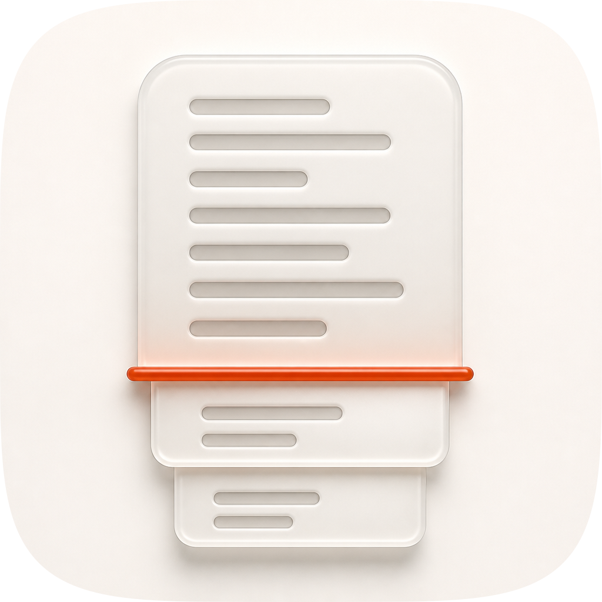
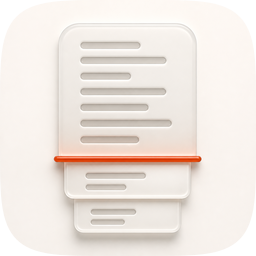

| Take | Hero at 1024, then renders at 128 / 64 / 48 / 32 / 16 css px (2× retina sources), plus the 16px squint magnified | Rubric | Verdict |
|---|---|---|---|
A · icon.svgEngine A, hand-authored layered SVG — the take
currently shipping as icon.png / icon-256.png / icon-128.png |
      |
11 / 12fails 7 | One porcelain sheet 552px wide, creased once across its full width at y=505. Above the crease a single uninterrupted column of ruling; below it the same sheet separated into two leaves, each inset 46px and stepped 34px, each carrying a shorter run. The crease is the only place the two states meet and the only place colour appears — one source, two renderings, which is the skill's architecture in one silhouette. Clears all four non-negotiables on the renders beside it. Was scored 10/12 on 19 Aug; #10 moved to a pass on the variants rendered below. That earlier failure was an inference from #7 — that porcelain-on-porcelain held up by shadows would die when the ground changed register — and the renders falsify it: on Dark the same artwork measures 11.72:1 where the default measures 1.08:1. #7 itself stands and is now the only failure: at 1.08:1 sheet-to-ground and a grayscale separation of 4 levels out of 255, the object is held together by its drop shadows and a 2.5px hairline in the one register it actually ships in. It is also the lightest of the 38 icons in this marketplace (median tile luminance 0.884 against a family median of 0.772) and the only one whose darkest pixel never gets below 0.142. |
A2 · icon-A2-fold-inverted.svgEngine A widened, because Engine B
refused — build_icon_a2.py. Recommended, not shipped |
11 / 12fails 8 | The same fold with its values inverted: the sheet is warm graphite on the same
porcelain ground, the ruling is knocked out in porcelain rather than printed in warm grey, and the
crease is a recessed slit of light rather than a raised band, its glow clipped to the paper faces it
falls on. Geometry is lifted verbatim from build_icon.py, so the comparison is value and
material only. It answers #7 outright — 9.90:1 sheet-to-ground against the master's 1.08:1, a
grayscale separation of 180 levels against 4, ruling at 11.00:1 against its own face — and it
is the best 16px read in the set at a luminance spread of 0.3601 against the master's 0.1410. It also
lands inside the family rather than outside it: median tile luminance 0.818 against a family median
of 0.772, where the master is the set's outlier at 0.884. Loses #8. The slit spans
y=512–536 while the sheet's lower edge is y=505 and the first leaf's upper edge is y=563, so
the accent touches neither plane — a 7px gap above and a 27px gap below. The direction's whole
claim is that the crease is where the two states meet, and here it floats in the void between them,
bridged by the glow rather than by contact. Two liabilities that are not rubric deductions but belong
on the record: the dark-panel-with-pale-ruling vocabulary is tui-craft's, and on Dark its
sheet drops to 1.10:1 against the ground. |
|
| C2 · icon-engineC-b88abc-2.pngGPT Image 2 raster, four porcelain corpus references — the material donor | 9 / 12fails 4, 7, 10 — 4 is non-negotiable | The best material in the set, and the reason to keep it: genuinely debossed ruling
with ambient occlusion in each channel, frosted gel faces that take the ground's hue, generous
rounded arrises, and a ground that does carry an edge falloff (−0.0399, against the A takes'
−0.0335). It reads beautifully at 1024 and it is disqualified anyway, because a failure on
check 4 ends it whatever the total. At 16px the panel is a ghost and only the accent bar survives:
face-to-ground is 1.05:1, the stepped-leaf silhouette that the whole direction rests on does not
come through, and the ×6 magnification beside it is haze around a coloured line. It also loses #7 on
the same 1.05:1, and #10 because a single-layer raster is the corpus's named 76% failure mode —
variants.py cannot run on it at all, since there is no bg group to
substitute. And it did not follow the brief where the brief mattered most: the crease came back as a
cylindrical rod laid across the front of the sheet with rounded ends overhanging, so it reads as a
highlighter marking a page rather than as a fold that generates the pagination beneath it. |
|
| C1 · icon-engineC-c04596.pngGPT Image 2 raster, same four references, same call |   |
8 / 12fails 4, 7, 9, 10 — 4 is non-negotiable | The same call's other frame, and the weaker of the two on every measurement that matters. Its ruling is embossed up rather than pressed in, so the texture is lighter than the face it sits on: 1.08:1, the narrowest figure-ground of any take here, which is why the panel at 16px is emptier than C2's. Face-to-ground is 1.03:1. It loses #9 as well: its ground's edge falloff is −0.0073, 4.6× weaker than either A take, so the tile is effectively a flat field, and the corpus's first era rule is that the tile is a cushion and not a print. Same #10 failure as C2 for the same reason, same rod-instead-of-crease reading. Useful as a negative result: passing four porcelain corpus references transfers the material and the ground register faithfully and transfers nothing at all about where the emphasis goes or what the accent is supposed to mean. |